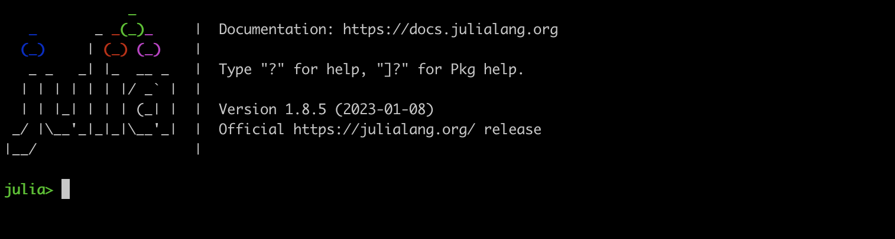

설치와 환경 구성
1 Julia 설치
다운로드 페이지 에서 다운받을 수도 있고, homebrew 나 apt 같은 운영체제별 패키지 관리자를 이용하여 설치할 수도 있습니다. 당신이 julia 언어에 막 입문했거나, 특별히 선택해야할 버젼이 없다면 다운로드 패이지에서 최신버젼을 다운받는것을 추천드립니다. 설치가 완료된 후 터미널에서 julia 명령을 수행하면 다음과 같은 화면을 볼 수 있을 것입니다.

위의 화면이 보인다면 julia 가 정상적으로 설치 된 것입니다.
Julia REPL
위의 스크린샷과 같이 julia> 옆에 무언가를 치면 그대로 입력됩니다. 예를 들어 3+3 을 계산하고 싶으면 3+3 을 치고 엔터키를 누르면 그 결과가 출력됩니다.
julia> 3+3
6이렇게 입력을 기다리다가 입력이 되면 읽어서(Read), 그 값을 평가하고(Evaluation), 그 결과를 출력하는(Printing) 것을 계속 반복하게(Loop) 하게 됩니다. 이것을 영어 단어의 첫글자만 따서 REPL 이라고 합니다. julia 언어의 기본적인 상호작용은 터미널에서 REPL 을 수행하는 것입니다. 별도의 다른 프로그램이 필요하지 않고, 간단한 계산을 할 때 가장 빠르다는 장점이 있지만 긴 코드를 짤 때 불편하며, 그래프를 출력하는데 많은 제한이 있습니다. 그래서 보통은 다른 환경에서 julia 를 수행합니다.
Julia REPL 프롬프트 변경
기본적으로 julia REPL 의 프롬프트는 julia> 이지만 개인적으로
In [1]: 5 + 3
Out[1]: 8와 같은 방식을 선호하기 때문에 위와 같은 방식을 사용합니다. Julia 공식 메뉴얼의 Numbered Prompt 대로 고치면 이렇게 사용 할 수 있습니다.
2 개발환경 설정에 관해
Julia 의 개발 환경은 많은 선택지가 있습니다. Python 에서 많이 사용하는 jupyter notebook 을 사용할 수도 있으며, emacs, vim, atom, vscode 와 같은 다양한 편집기를 사용할 수도 있습니다. 개인적으로 Microsoft 사에서 제공하는 텍스트 편집기 겸 통합개발환경인 Visual Studio code (vscode) 를 사용하는 개발환경을 추천합니다. vscode 에서의 julia 지원 페이지 대로 따라 하면 julia 개발 환경을 구성 할 수 있습니다.
저는 짧은 코드를 계속 입력하면서 결과를 확인하는 작업을 많이 할때는 vscode 의 jupyter 환경을 주로 사용하며, 긴 코드를 사용할 때는 vscode 와 Julia 언어 지원을 사용합니다. Jupyter 에 익숙하지 않다면 단순히 julia 지원만을 사용하는 것도 좋은 방법입니다. 여기에서도 줄단위, 블럭단위, 파일단위로 실행시켜 볼 수 있습니다. 그 이외에도 저는 사용해 본 적이 없지만 Pluto.jl 도 있습니다. 검색창에서 julia 개발 환경 을 검색하면 많은 내용이 나옵니다. 그 중에 여러분의 입맞에 맡는 것을 선택하면 됩니다. 여기에서는 짧은 코드는 Julia REPL 을 바탕으로 설명하겠지만 다른 개발 환경에서도 거의 그대로 결과가 나올 것입니다.
3 기본 제공 문서
비록 영어로 되어 있긴 하지만 Julia 에 내장된 기본 도움말은 매우 훌륭합니다. Julia REPL 에서는 julia> 프롬프트에 ? 를 치면 help>로 변경되는 것을 볼 수 있을 것입니다. 여기에 함수 이름이라든가, 타입 이름 같은 것을 치면 그에 대한 도움말을 제공합니다. Jupyter 에서는 입력 셀에 ?sin 과 같이 ? 를 맨 앞에 두고 입력한후 실행하면 문서를 찾아 제공합니다. vscode 에서는 자동적으로 팝업 윈도우로 제공합니다만 2023년 12월 현재로서는 완전하지 않습니다. 이렇게 제공되는 문서는 당신이 사용하는 Julia 와 페키지에 대한 공식 문서이므로, 가장 믿을만하고 우선적으로 참고해야하는 문서가 되겠습니다.
Julia 언어에 기본적으로 포함되어있는 함수, 모듈들 이외에 많은 모듈을 설치하게 될텐데 그 모듈들도 대부분 똑같은 형식의 도움말을 제공합니다.
4 유니코드 및 수학 기호 지원
Julia 에서는 REPL 에서도 수학 기호를 포함한 다양한 문자를 입력하고 사용 할 수 있습니다. \ 로 시작되는 구문을 입력한 후에 공백 없이 탭 키를 누르면 자동적으로 기호로 변환된됩니다. 예를 들어 Julia REPL(Julia 에서 지원하는 interactive command line 환경), jupyter notebook, vscode 에서 \alpha 를 치고 곧바로 탭(tab) 키를 누르면 α 로 변환됩니다. 정확히 말하면 \alp 정도 까지만 입력한 후 탭키를 눌러도 자동완성 기능으로 인해 \alpha 가 다 입력된 후 α 로 변환된 것입니다. 이렇게 입력된 α 는 일반 알파벳과 같이 변수명으로도 사용 될 수 있습니다. 이 때 입력되는 구문은 LaTeX 와 같거나 유사한 경우가 많습니다. 주의할 것은 π(\pi+[tab]) 와 ℯ(\euler + [tab]) 는 특정 값이 지정되어 있는 대표적인 수학 기호입니다. pi 역시 원주율 입니다.
julia> π
π = 3.1415926535897...
julia> ℯ
ℯ = 2.7182818284590...
julia> pi
π = 3.1415926535897...Julia 에서 사용할 수 있는 유니코드 기호와 \로 시작하여 탭 키를 눌러 완성되는 문자들은 julia 공식 문서의 Unicode Input 을 참고하시기 바랍니다.